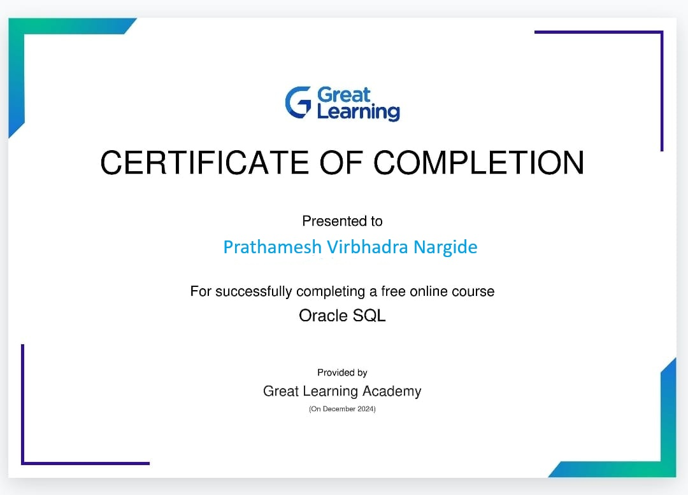
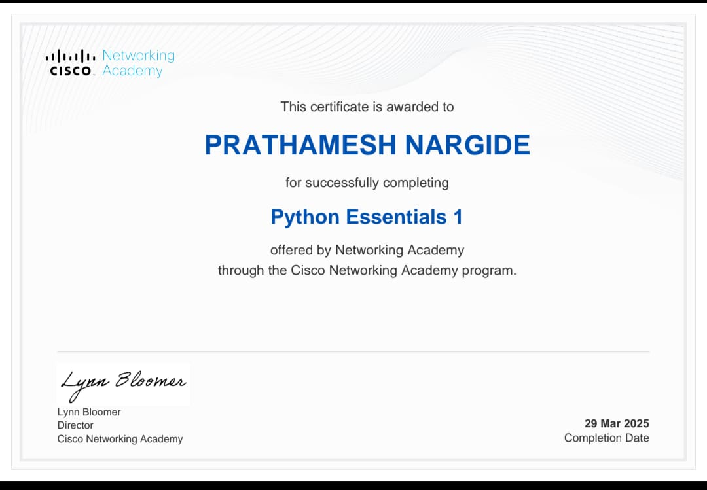
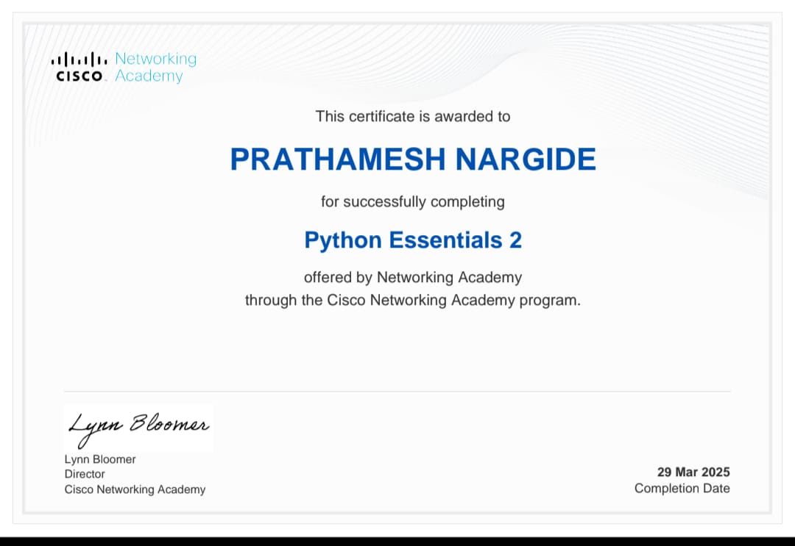
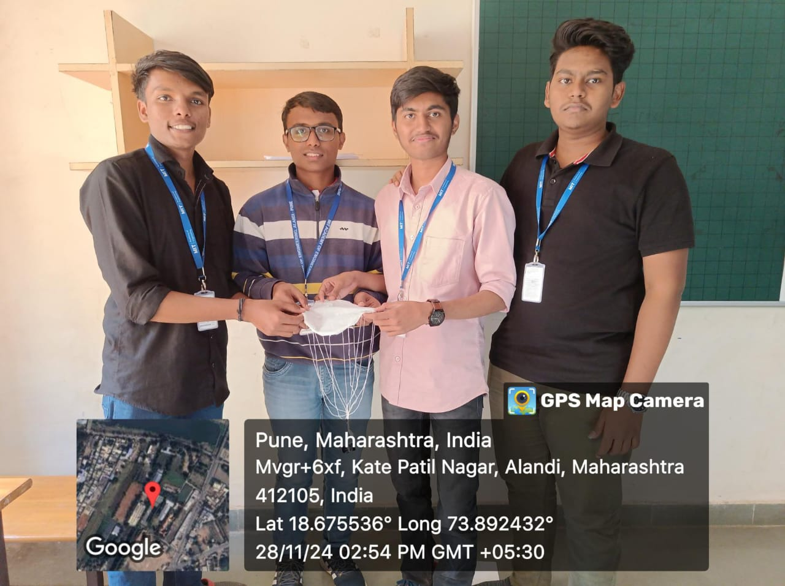

I had completed my 12th from Shri Chaitnya Junior Collage, Pune. Currently I am trying to learn various things
related to computer language.
To know more about me
MY CV DOWNLOAD from here
Education
10th Percentage = 91.33%
12th Percentage = 73.33%
In 1st year's 1stsemester i got = 7.9 sgpa
Certification's
SQL

Cisco essential 1

Cisco essential 2

Projects
Project 1

The "Parachute Model" Project is of "Applied Mechanics" Course.This Project includes a plastic carry bag, Thread, a small weight which states the Principle of Gravity. Me and 3 friends were part of the project.
Project 2

This project was maid by me and my 3 friends who were in the same batch . This project was maid under the subject "ENGINEERING PHYSICS" in this project one of my friend maid a wireless electric transmition device . This project was based on Electricity and wireless electricity transmition .
Project 3
The "Ecosystem" is the name of website which was the project of "DT(Design Thinking)" course.This project was made by 4 group members including me. The website was made to help farmers, by giving information about the crops, reccomending information about crops,fertilizers,etc. The website shows the correct time for planting the crops, spraying of fertilizers and provides the method to generates more yield.